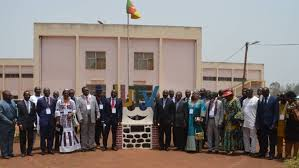
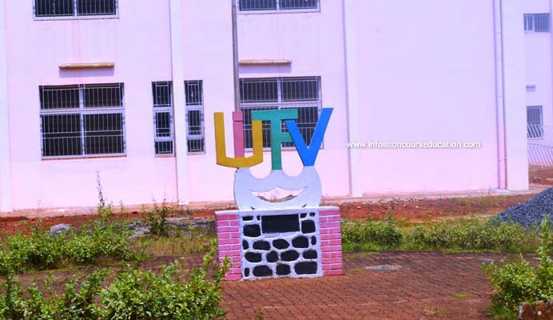

Bienvenue à l'IUT Fotso Victor de Bandjoun
L'innovation technologique au cœur de la région de l'Ouest


Présentation de l'IUT-FV
L'Institut Universitaire de Technologie Fotso Victor (IUT-FV) de Bandjoun est un établissement public de l'Université de Dschang.
Fondé grâce à la générosité du donateur FOTSO Victor, cet institut est une référence en Afrique centrale pour la formation des ingénieurs de travaux, des techniciens supérieurs et des professionnels des métiers de l'industrie et de la gestion.
Nos Missions Fondamentales
Idéalement implanté à Bandjoun, l'institut poursuit des objectifs rigoureux :
- Former des techniciens hautement qualifiés et directement opérationnels.
- Promouvoir l'innovation à travers des projets technologiques concrets.
- Soutenir le tissu industriel local et national par des expertises pointues.
- Offrir des parcours adaptés aux évolutions du secteur numérique et de l'énergie.
Offre de Formation
Génie Électrique et Informatique
Génie Civil et Thermique
Sciences de Gestion et Commerciales
Admission & Diplômes délivrés
Diplômes d'entrée : Baccalauréat C, D, E, F, TI, GCE Advanced Level ou diplôme équivalent.
Cycles disponibles : Brevet de Technicien Supérieur (BTS), Diplôme Universitaire de Technologie (DUT), Licences Professionnelles et Masters Professionnels.
Infrastructures Récentes
L'IUT-FV dispose d'un écosystème d'apprentissage performant :
• Des laboratoires informatiques équipés de serveurs de pointe.
• Des ateliers de mécanique générale et de construction civile.
• Un centre de documentation et une connexion Internet haut débit pour les recherches.